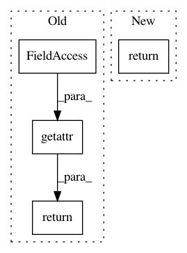

a34e171a4ae9071af30733b2ebca61199977f2c8,enthought/chaco/layers/svg_range_selection_overlay.py,SvgRangeSelectionOverlay,_get_mapper,#SvgRangeSelectionOverlay#,130
Before Change
mapper = getattr(self.plot, self.axis + "_mapper")
if isinstance(mapper, GridMapper) \
and self.plot.container is not None:
return getattr(self.plot.container, self.axis + "_mapper")
After Change
if self.axis == "index":
return mapper._xmapper
else:
return mapper._ymapper
else:
return mapper
In pattern: SUPERPATTERN
Frequency: 3
Non-data size: 4
Instances
Project Name: enthought/chaco
Commit Name: a34e171a4ae9071af30733b2ebca61199977f2c8
Time: 2009-11-10
Author: bhendrix@651a555e-23ca-0310-84fe-ca9f7c59d2ea
File Name: enthought/chaco/layers/svg_range_selection_overlay.py
Class Name: SvgRangeSelectionOverlay
Method Name: _get_mapper
Project Name: enthought/chaco
Commit Name: a34e171a4ae9071af30733b2ebca61199977f2c8
Time: 2009-11-10
Author: bhendrix@651a555e-23ca-0310-84fe-ca9f7c59d2ea
File Name: enthought/chaco/tools/range_selection_overlay.py
Class Name: RangeSelectionOverlay
Method Name: _mapper_default
Project Name: befelix/safe_learning
Commit Name: e67746bf31168f1c3fd44763caed7deaa6b2e043
Time: 2017-04-18
Author: fberkenkamp@gmail.com
File Name: safe_learning/utilities.py
Class Name:
Method Name: get_storage